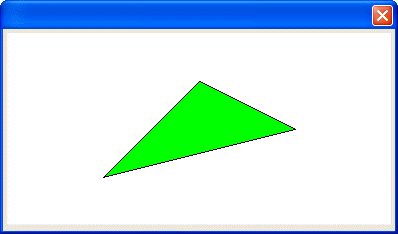

FILL_POLY()
Syntax
FILL_POLY( Xpos as N, Ypos as N )
Argument | Description |
Xpos | The horizontal coordinate of the upper left corner of the shape. Larger values move right. |
Ypos | The vertical coordinate of the upper left corner of the shape. Larger values move down. |
Description
FILL_POLY() completes a polygon and fills it with the current brush color. The border color is the current pen color. Compare to the INNER_POLY()and POLY()functions.

Limitations
Used only in the Code sections of UI_BITMAP_DRAW(), UI_SCREEN_DRAW(), and UI_PRINTER_DRAW().
Example
ui_bitmap_create("test", 4, 2) ui_bitmap_draw("test",<<%code% inner_Rect(0, 0, 4, 2) set_brush("green") set_pen("black") start_poly(2, .5) lineto(3, 1) lineto(1, 1.5) fill_poly(2, .5) %code%) ui_dlg_box("","{image=test}") |
See Also